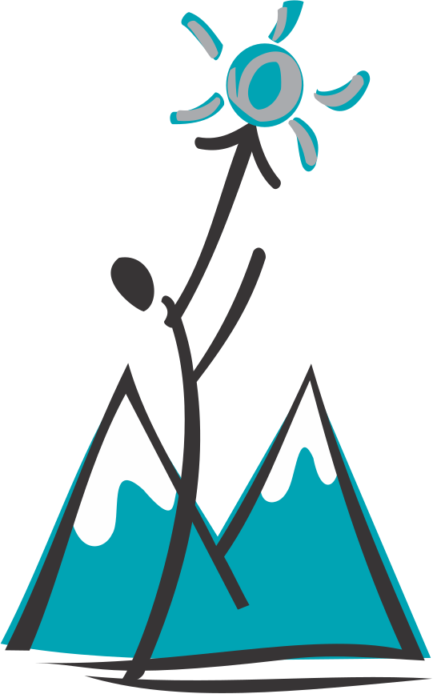

University of Toronto
B.S in Computer Science

Fletcher's Meadow Secondary School
High School Diploma with Honours
|
Sept, 2018 - Apr, 2023
University of Toronto B.S in Computer Science |
|
|
Sept, 2014 - June, 2018
Fletcher's Meadow Secondary School High School Diploma with Honours |
 |
|
May, 2022 - Aug, 2022
Interac API Design Intern |
During my tenure at Interac, Canada's largest payment processing company, I had the opportunity to gain valuable experience in product development. I held the dual role of Product Manager for the Account Based Payments product and as a designer for a new feature aimed at enhancing Interac's E-Transfer service. This feature aimed to enable customers to send and receive transfers using their Twitter handles, adding a new level of convenience and accessibility to the platform. |
|
May, 2021 - Apr, 2022
Oracle Software Developer Intern |
During my role at Oracle, I took charge of the development of various components for their drag-and-drop editor. By utilizing JavaScript and React, my main objective was to improve accessibility for non-technical users. I introduced innovative techniques such as leveraging html2canvas and iframe to automate the generation and display of thumbnail images for all posts created within the drag-and-drop editor. This approach elevated the overall user experience to unprecedented levels. Additionally, I implemented rigorous testing methodologies, employing tools like Jest, to effectively minimize software bugs and enhance the overall reliability and performance of the product. |
|
Nov, 2017 - July, 2020
Kumon Team Member |
Grade and record students homework and classwork. Organize and setup student folders for the following class. |
|
Apr, 2019 - Aug, 2019
Canada's Wonderland Ride Operator |
Operate and perform daily inspections on amusement rides, take note of any equipment damage or wear and report maintenance and repair problems to their supervisors. |
|
Nov, 2022
r/Place Clone |
Used Amazon Web Services (AWS) to develop a serverless application that emulates the famous subreddit r/place. The application leverages various AWS tools such as Lambda, DynamoDB, ElastiCache, API Gateway, VPC, and Amplify to build the system. The app is designed to accommodate up to 100,000 users and handle 300 updates per second. The front-end of the application is built with JavaScript and features a 1000x1000 board that allows users to send and receive updates through a websocket. |
|
Oct, 2022
URL Shortner Server |
This project is designed to handle a large volume of data and scale as the number of users and data increased. By leveraging a Docker swarm, workload distribution was achieved across multiple containers to maximize scalability and enhance system resilience. The system was further optimized for performance by implementing Redis caching and streams. Redis caching reduced the need for repeated database queries by storing frequently accessed data in memory, improving response times by 65%. Redis streams enabled the system to process incoming data efficiently, further enhancing its ability to handle large volumes of data. Redis streams improved the response times up to 90% for write requests. The result was a highly efficient, scalable, and reliable system capable of handling high loads of traffic without any disruptions or downtime. |